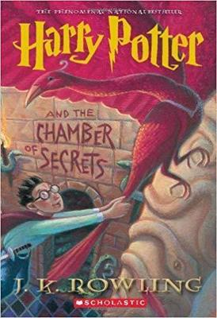

Harry Potter and the Sorcerer’s Stone

In Harry Potter and the Sorcerer's Stone,the book that started it all(understatement of the century),Harry Potter discovers his true identity in the wee hours of his eleventh birthday:
he is a wizard,famous in the magical world for having vanquished the evil Lord Voldemort when he was only a baby.
This revelation,delivered by a gruff,hairy giant named Hagrid,sets Harry on a fantastical(if also often frightening)journey of a lifetime.He meets bosom buddies Ron and Hermione aboard the Hogwarts Express,
and is soon sorted with them into Gryffindor:the house of the intrepid and brave.However,Harry also makes plenty of enemies at Hogwarts,most notably the
arrogant Draco Malfoy and the nasty potions master,
Snape(both affiliated with Slytherin house).And from battling a troll on Halloween to his first exhilarating Quidditch match — not to mention the novel’s climax,in which Harry goes up against Voldemort for the second time in his young life — there’s never a dull moment in the first year of his new adventure.
Sorcerer’s Stone(or Philosopher’s Stone,as it’stitled outside of the US)also perfectly balances exciting action with touching emotion,as Harry finds a true family in Ron and Hermione after years of misery with the Dursleys.
Indeed,the book’s small,moving moments—such as Harry being floored by a gift from Ron’s mother,or Hermione’s tearful declaration
at the end about
“books and cleverness”—are just as magical as the spells themselves.
Harry Potter and the Chamber of Secrets

In Harry Potter and the Chamber of Secrets,Harry and friends return to Hogwarts with a bang—the bang of a flying Ford Anglia as it crashes into the Whomping Willow,that is.
After being spotted by Muggles and narrowly avoiding expulsion, you’d think that the rest of Harry’s second year would be smooth sailing in comparison… right?Wrong.
When the school caretaker’s cat is found petrified(essentially paralyzed and comatose,but technically still alive)along with a bone-chilling message that“the Chamber of Secrets has been opened,”fear and suspicions start to arise — and of course,only worsen when students start getting petrified too.
Nobody can figure out who the culprit is,only that he refers to himself as “the Heir” and seems to be on the warpath.But as our young heroes know well by now,if you want a mystery solved right, you have to do it yourself.Which they do—through
a combination of Polyjuice potion brewing, mysterious flashbacks provided by a sentient journal,and a truly horrific excursion to see a giant spider called Aragog.
The book culminates in a visit to the titular chamber,which lies underneath Hogwarts and contains yet another deadly threat that Harry must face.
But of course,this being an early Potter book,it’s not all din and danger.Comic relief comes in the form of moronic,egocentric professor Gilderoy Lockhart,and toilet ghost Moaning Myrtle—who,in true Rowling fashion,ends up being key to the central plot twist of the story.